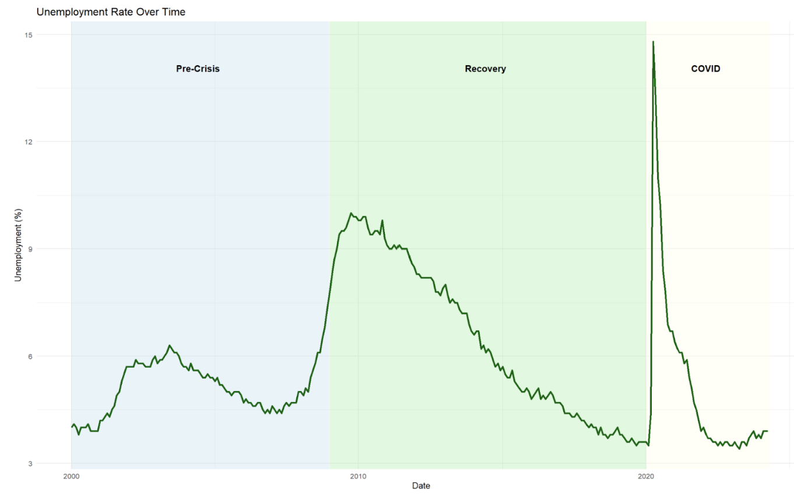
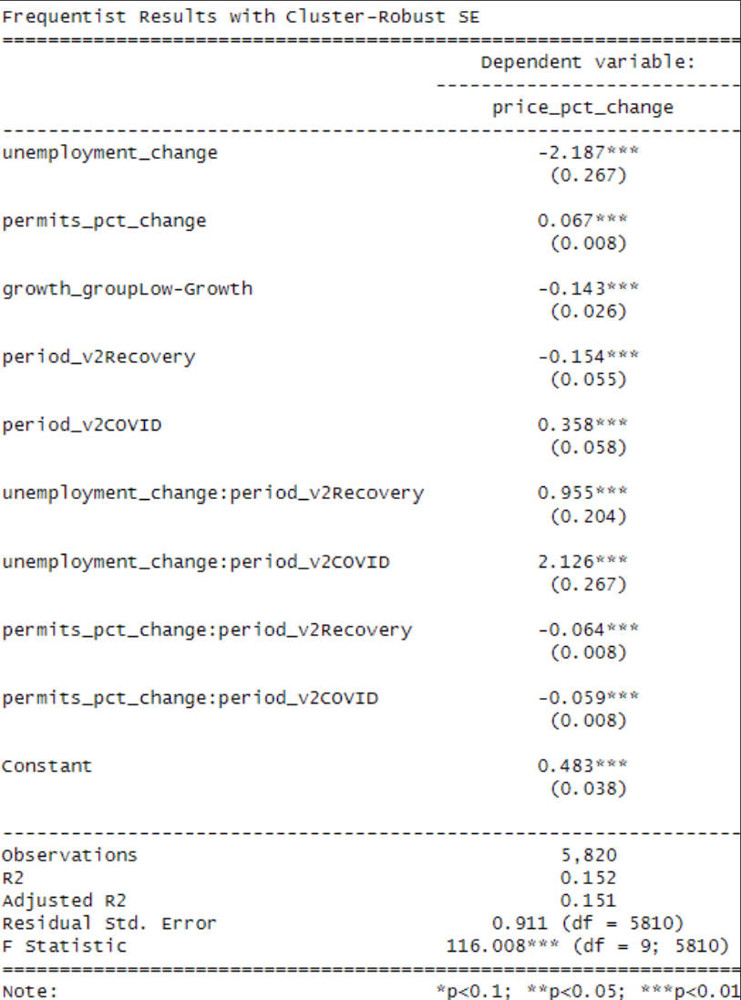
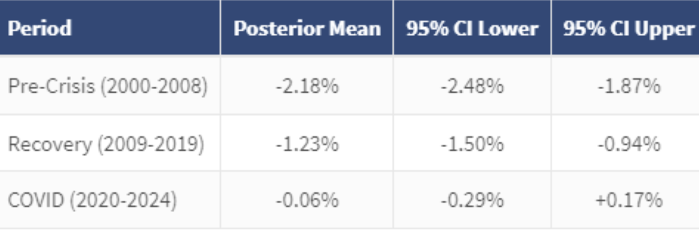
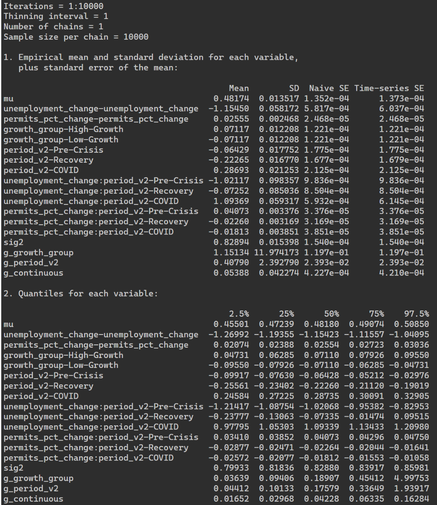
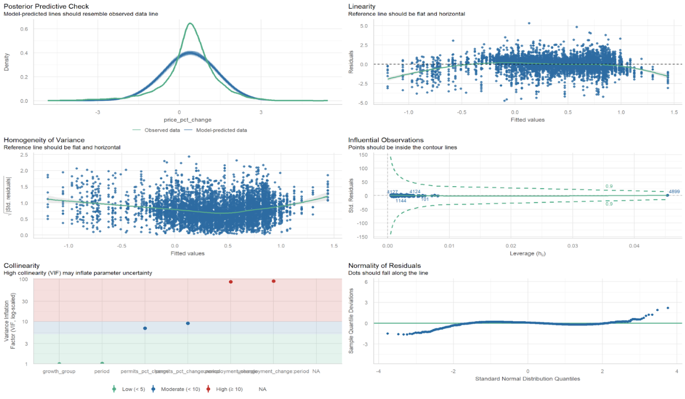

The Decoupling of U.S. Housing Markets
from Economic Fundamentals
How has unemployment's relationship with housing prices changed since 2000? Using 5,840 observations across 20 U.S. metro regions, a single interaction-term OLS model and Bayesian MCMC analysis reveal three distinct periods: a strong pre-crisis sensitivity, a weakening recovery, and a near-complete decoupling during Covid, with unemployment's predictive power declining by ~97% across the span.
When Economic Rules Stop Working
It is generally accepted that housing markets respond to economic fundamentals: when unemployment rises, housing demand and prices should fall. These relationships are the foundation of housing market forecasts and policy design. Since 2000, two crises have tested that assumption: the 2008 housing bubble and the 2020 Covid pandemic. This paper asks whether those relationships have held, weakened, or effectively vanished.
If a decoupling effect is real, forecasting models built on pre-2008 market patterns may be structurally wrong. Understanding when and how these relationships broke down matters for policymakers, lenders, and anyone trying to read the housing market from economic signals.

Figure 1. National unemployment rate from 2000 to 2024 across the three defined analytical periods.
Data and Analytical Approach
All data was sourced from FRED, covering January 2000 to April 2024 (292 months) across 20 U.S. metro regions, yielding 5,840 total observations. The dependent variable is the month-to-month percentage change in nominal housing prices. Independent variables include national unemployment rate change, building permits percentage change, a metro-level growth classification (high vs. low growth, split at 200% total appreciation), and period indicators.
Two approaches were employed in parallel: a frequentist panel regression with interaction terms and cluster-robust standard errors (clustered by city), and a Bayesian MCMC analysis using 10,000 iterations to generate posterior distributions and 95% high density intervals (HDIs). The interaction terms allow unemployment and permit effects to vary across the three defined periods, with Pre-Crisis as the reference period. Using both approaches allowed for cross-validation across methodologies.
The model is specified as:
+ β₄ΔPermits + β₅Recovery × ΔPermits + β₆COVID × ΔPermits + β₇GrowthGroup + ε
A 97% Decline in Unemployment Sensitivity
All coefficients are statistically significant at p<.01. The Pre-Crisis base unemployment coefficient is -2.187%. Effective period coefficients are recovered by summing this base with each interaction term. R² of 15.2% is sufficient for monthly economic data, where idiosyncratic local variation is expected to dominate.
| Period | Effective Coefficient | Derivation | Relative Magnitude |
|---|---|---|---|
| Pre-Crisis 2000-2008 | -2.187%*** | β₁ (base) |
|
| Recovery 2009-2019 | -1.232%*** | -2.187 + 0.955 |
|
| Covid 2020-2024 | -0.061%n.s. | -2.187 + 2.126 |
| Term | Coefficient | (Std. Error) |
|---|---|---|
| unemployment_change (Pre-Crisis base) | -2.187*** | (0.267) |
| permits_pct_change (Pre-Crisis base) | 0.067*** | (0.008) |
| growth_group: Low-Growth | -0.143*** | (0.026) |
| period: Recovery | -0.154*** | (0.055) |
| period: Covid | 0.358*** | (0.058) |
| Interaction Terms | ||
| unemployment_change x Recovery | +0.955*** | (0.204) |
| unemployment_change x Covid | +2.126*** | (0.267) |
| permits_pct_change x Recovery | -0.064*** | (0.008) |
| permits_pct_change x Covid | -0.059*** | (0.008) |
| Constant | 0.483*** | (0.038) |
| Observations | 5,820 | |
| R² | 0.152 | |
| Adjusted R² | 0.151 | |
| Residual Std. Error | 0.911 (df = 5,810) | |
| F Statistic | 116.008*** (df = 9; 5,810) | |
| Cluster-robust SE (city-level). *** p<0.01, ** p<0.05, * p<0.1. Reference period: Pre-Crisis (2000-2008), reference growth group: High-Growth. | ||

Figure 2. Full R regression output. The base unemployment_change coefficient (-2.187) applies to Pre-Crisis. Effective period coefficients are recovered by adding each interaction term to this base.
The Covid HDI Contains Zero
The Bayesian results mirror the frequentist findings precisely. Posterior means for each period are nearly identical to the OLS estimates. The critical result: the Covid period's 95% HDI spans [-0.29%, +0.17%], meaning there is a 95% probability that the unemployment-housing price relationship has gone to zero by 2020-2024. The Pre-Crisis and Recovery intervals contain only negative values, confirming those effects were real.
| Period | Posterior Mean | 95% HDI Lower | 95% HDI Upper | Zero in HDI? |
|---|---|---|---|---|
| Pre-Crisis (2000-2008) | -2.18% | -2.48% | -1.87% | No |
| Recovery (2009-2019) | -1.23% | -1.50% | -0.94% | No |
| Covid (2020-2024) | -0.06% | -0.29% | +0.17% | Yes |

Figure 3. Posterior means and 95% HDIs per period. The Covid interval is the only one to contain zero.

Figure 4. Full MCMC output (10,000 iterations). Posterior samples and quantiles for all model parameters.
Diagnostic Visualizations
Expected multicollinearity is present within the interaction terms. All other diagnostics, including posterior predictive check, linearity, homogeneity of variance, influential observations, and normality of residuals, are within acceptable ranges.

Figure 5. Diagnostic panel: posterior predictive check, linearity, homogeneity of variance, influential observations, collinearity (VIF), and normality of residuals.
The Rules Changed. Twice.
The relationship between unemployment and housing prices that defined pre-2008 markets no longer appears to exist. Both methods agree, and the numbers tell a clean story.
A one percentage point rise in unemployment predicted a -2.19% monthly decline in housing prices. The market behaved as economic theory expected, with tight sensitivity to labor market conditions.
Sensitivity fell to -1.23%, roughly half of the pre-crisis level. The relationship was still real, still statistically significant, but something had shifted in how markets priced in labor market signals.
The coefficient dropped to -0.06%, statistically indistinguishable from zero. The Bayesian HDI confirms it: there is a 95% probability the effect is zero. Unemployment and housing prices decoupled.
The most plausible explanation is that fiscal and monetary interventions, mortgage forbearance, stimulus payments, and record-low rates, insulated housing prices from the labor market in ways that prior models never accounted for. Forecasting models built on historical patterns may be structurally outdated.
The key open question is whether the decoupling persists beyond 2024 as policy interventions fade, or whether unemployment and housing prices re-couple as conditions normalize. The answer will determine whether the Covid period represents a structural break in housing market dynamics, or simply a temporary distortion.